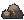
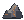
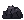
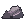
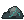
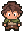

Tales of Myrren — Ore Art V2
Draft art only. Original native pixel assets: 24×20 RGBA. World draw width: 24 pixels at fixed 2× camera. Existing gameplay and saves are unchanged.
CopperOrange seams
TinPale silver seams

CoalLumpy charcoal


IridiumSilver-blue lines

Exact 2× world scale versus approved character

Art-only review page. Chromium and Iridium are not yet mining or forging resources in the running game. Legacy Obsidianite and Meteorite are still used until safe migration.
No background art has been edited. This is a size and palette study, not a gameplay screenshot.